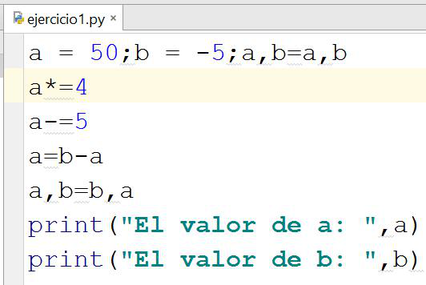
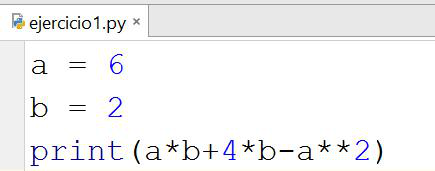
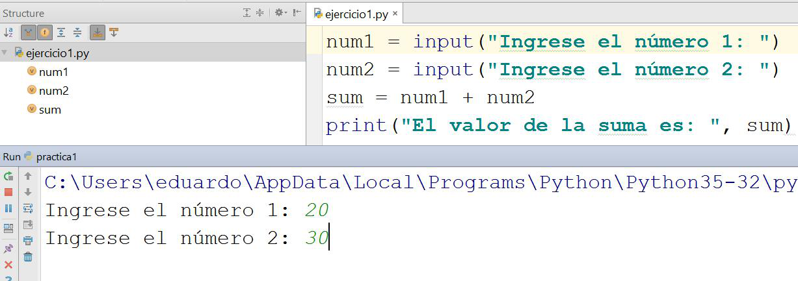

ESCUELA SUPERIOR POLITÉCNICA DEL LITORAL
FACULTAD DE INGENIERIA EN ELECTRICIDAD Y COMPUTACION
TALLER DE TIPO DE DATOS – FUNDAMENTOS DE PROGRAMACIÓN
ING. EDUARDO CRUZ RAMÍREZ, MSIA.
- Cuál es la salida de ejecutar el siguiente script:

- Cuál es la salida de ejecutar el siguiente script:

- Cuál es la salida de ejecutar el siguiente script, utilizando los datos de entradas mostrados en la siguiente imagen.

- Escribir un programa en Python que solicite un número por teclado y muestre True sí el número se encuentra bajo las siguientes condiciones:
El número debe estar entre 25 y 60 sin incluir el 40 ó entre -20 y -40 sin incluir el -30, además debe ser divisible para 2 y elevado al cuadrado debe ser menor que 100.
En caso contrario debe mostrar False.
No puede utilizar condicionales para resolver este problema.